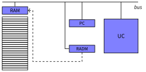

Systèmes d'exploitation
Organisation et Gestion de la mémoire
3A - Cursus Ingénieurs - Dominante Informatique et Numérique
CentraleSupelec - Université Paris-Saclay - 2024/2025
CentraleSupelec - Université Paris-Saclay - 2024/2025

La mémoire pour qui et pour quoi ?
Pour le système d'exploitation
-
Au lancement d'une machine, l'OS est le premier programme
chargé en mémoire - L'OS aussi a besoin d'espace mémoire
- le code de son Noyau
- la table des interruptions
- la table des processus
- des structures de données (PCBs et autres )
- ...
La mémoire pour qui et pour quoi ?
Pour les processus
- A la création d'un processus, l'OS crée
un PCB et alloue
de la mémoire pour le processus. - Pour des raisons de sécurité, chaque processus doit utiliser
une zone mémoire distincte (un espace d'adresses).- quel mécanisme d'allocation de cet espace ?
- comment assurer la protection de cette zone ?
- comment assurer la transparence de cet espace ?
Espace de stockage
- Ensemble ordonné de cases indexée par leur adresse
(numéro de la case) et contenant:- des instructions $\rightarrow$ registre PC dans le processeur
- des données $\rightarrow$ registre RADM dans le processeur


Structure de la mémoire
-
Chaque case mémoire est associée à une adresse
- le numéro de la case
-
Cette adresse est obtenue depuis une instruction
- l'adresse est en binaire sur $n$ bits
-
Il y a donc $2^n$ différentes adresses possibles
- $2^n$ cases de $00\ldots0$ à $11\ldots1$
- Exemple: $32$ bits $\to$ $2^{32} \approx 4$ Go
Fonctionnement de la mémoire
-
L'UC va récupérer les instructions dans la mémoire
à partir de leur adresse (fetch); -
L'UC va récupérer les données des variables dans la mémoire
à partir de leur adresse; -
L'UC écrit dans des variables à une adresse donnée
dans la mémoire.

D'où viennent les programmes?
Le programme (code + données) est chargé depuis le disque
vers la mémoire
... il est placé à un endroit donné dans la mémoire
Question ?
quelles sont les adresses des variables en mémoire ?
quelles sont les adresses des variables en mémoire ?
Programme vs processus
Adresses symboliques vs Adresses mémoires
Édition de liens
Lors de la création de processus, l'OS instancie le programme.
Lors de la création de processus, l'OS instancie le programme.
- transformer les noms des variables en adresses.
Méthodes de liaison d'adresses
-
À la compilation $\to$ on connaît les adresses
des instructions
et de toutes les données- adresses utilisées à l'intérieur d'un programme
- adresses relatives au début du programme
-
Au chargement $\to$ la taille du processus est fixée
- adresses virtuelles (logiques): adresses utilisées dans le programme
- adresses physiques: adresses utilisées dans la RAM
- nécessite un composant de translation dans l'UC
(Memory Management Unit - MMU)
-
À l'exécution $\to$ le processus a besoin de plus de place
- déplacer le processus + réédition de lien
Résolution d'adresse
Memory Management Unit - MMU

Stratégies d'allocation
de mémoire
- Il faut choisir une stratégie pour allouer et libérer la
mémoire
en fonction des besoins des processus. -
Deux stratégies possibles:
- Allocation contiguë de cases mémoire (par partition)
- Allocation non contiguë (par pagination)
Allocation par partition
Les processus constituent un seul bloc non décomposable


- des trous apparaissent $\to$ fragmentation
- les gros processus ne peuvent pas rentrer $\to$ défragmenter
- réduire la fragmentation
- limiter les opérations de défragmentation
Allocation par partition
Stratégies d'allocation $\to$ choisir dans quelle zone libre placer un processus
- First Fit: premier bloc libre
- Best Fit: plus petit bloc libre
- Worst Fit: plus grand bloc libre
Allocation par pagination
- Découper la mémoire physique en blocs de taille $T_c$ constante, appelés
cadres de pages - Découper l'espace mémoire utilisé par un processus (espace logique)
en paquets de $x$ pages de taille $T_c$- chaque page a la même taille qu'un bloc
- Placer les pages dans les cadres


Allocation par pagination
-
Allocation mémoire
- un processus est dans des zones disjointes
- pas besoin de défragmenter
-
Adaptation:
- besoin de plus de mémoire $\to$ rajouter des pages
- pas besoin de le ré-allouer entièrement
-
Mémoire virtuelle: charger uniquement les pages
dont le processus a besoin.
Allocation par pagination
Adressage
Déterminer l'adresse physique à partir de l'adresse logique

Allocation par pagination
Adressage
Déterminer l'adresse physique à partir de l'adresse logique
-
Adresse logique
- Numéro de page ($n$ bits) + décalage ($m$ bits)
-
Chaque processus maintient une liste:
- numéro de page $\to$ numéro de cadre
- c'est la table des pages
Allocation par pagination
Résolution d'adresse

Allocation par pagination
Résolution d'adresse
-
En pratique, géré au niveau matériel $\to$ la MMU
- L'OS charge la table des pages du processus dans la MMU
- Pas de calcul d'adresse au niveau de l'OS
-
Allocation des cadres: ne pas allouer le même cadre à deux processus différents
- L'OS doit savoir quel processus utilise quel cadre
- Table des cadres de page libres
| num. cadre | num. proc. | libre |
|---|---|---|
| 0 | 42 | 1 |
| 1 | 37 | 1 |
| 2 | - | 0 |
| $\ldots$ | $\ldots$ | $\ldots$ |
Gestion de l'espace d'adressage
Problème $\to$ Grand espace d'adressage (ex: $32$ bits)
-
Trop de pages (ex: $n=20$, $m=12$)
- Grande table des pages $\to$ place mémoire perdue
- $2^{20}$ lignes de $20$ bits $\approx$ $2.5$ Mo par processus
- Allocation et commutation plus coûteuse en temps
-
Pages trop grosses (ex: $n=10$, $m=22$)
- Fragmentation = $2^{m-1}$ $\to$ place mémoire perdue
- $2^{21}$ octets $\approx$ $2$ Mo par processus
- Pas gérable au niveau du MMU
Pagination hiérarchique
2 niveaux (ou plus)
Solution $\to$ paginer la table des pages
- ne charger que les tables utiles
- réduire l'espace mémoire utilisé par le système d'adressage
- réduire la fragmentation due aux pages
Pagination à deux niveaux

Pagination à deux niveaux
Exemple
- Adresses sur $32$ bits et cadres de $4$ Ko $\to$ $m=12$
-
Pagination à $1$ niveau ($n=20$, $m=12$)
- Table des pages = $2^n$ lignes de $n$ bits
- Total = $2^{20} \times 20 \approx$ $2.5$ Mo par processus
-
Pagination à $2$ niveaux ($n_1=10$, $n_2=10$, $m=12$)
- Répertoire = $2^{10}$ lignes de $32$ bits $\approx$ 4 Ko
- 1 table de pages = $2^{10}$ lignes de $20$ bits $\approx$ $2.5$ Ko
- Total = entre $6.5$ Ko et $2.5$ Mo par processus